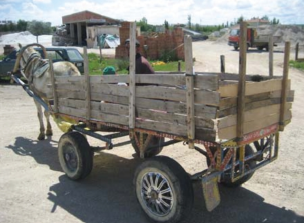
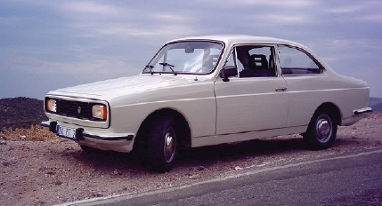

Sokaklardan arabalar arada bir geçer, onlar az geçtiği için de sokaklar bizim olurdu. Koca mahallede tek tük parketmiş araçlar fazla dikkatimizi çekmezmiş gibiydi aslında. Yine de hep özenirdik keşke bizim de arabamız olsaydı diyerek.
Ancak arabalarla ilişkimiz, oyun kartları ya da sakızlardan çıkan tanıtım kağıtları sayesinde, oynadığımız maçlarda altına top kaçtığında, bir de arabası olanlara araçlarını yıkarken yardım etmeye çalışırken olurdu. Yolculuk hariç en fazla bu şekilde muhatap olurduk arabalarla.
İnsanlar araçlarına şimdikinden daha fazla değer verirlerdi, diye düşünürüm. Kendi elleriyle yıkarlar, üzerlerine brandalarını her yolculuklarından sonra itina ile takarlardı. Bu zahmetli de bir işti, ama arabası olanlar üşenmezlerdi. Bir sürü süslemeler yaparlardı arabalarına. Örme karpuzlar mı koyan olmaz arka tarafa, patik mi istersiniz dikiz aynasının altında sallanan ya da bir küçük köpek kafası hareket halinde veya Maşallah yazıları…
Daha önce de söylediğim gibi etraf şantiyeyi andırırdı. Neredeyse binek araba kadar kamyon bilgimiz vardı. As 600, As 900, Desato, Fargo, Dodge, Iveco kamyon ve kamyonetleri, ilk aklıma gelenler.
Nakliye aracı olarak kamyon ve kamyonetlerden başka at arabaları da kullanılırdı. Arkada bulunan kasaları genellikle tahtadan olur, tekerlekleri ise önceleri tahtadan olmakla birlikte sonraları otomobil lastiğine terfi ettirilmiştir. Odun kömür nakliyesinde ve ufak tefek eşya taşınmasında en çok at arabaları tercih edilirdi.

Binek arabaları ağırlıklı olarak Anadol, Renault, Murat serisi arabalardı. Peugeot veya Opel’e de rastlanırdı. Bunlardan başka öyle Mercedes, Bmw gibi araçları binde bir görürdük. Sokağımıza Almancılar birilerini ziyarete gelmediğinde tabii. O benzini su gibi harcayan (aynen böyle tarif edilir,) Amerikan arabalarından kullananlar da vardı.
Burada taksiler, minibüsler, şoförler ve muavinleri hakkında bir şeyler söylemem gerek: Minibüsler yolculuklarımızın en önemli figürlerinden biriydi. Özel araçların sayısı az, taksi ücretleri bugüne kıyasla epeyce pahalıydı. (Bu arada taksimetre yoktu. İnsanlar şoförle pazarlık yaptıktan sonra binerlerdi arabaya,) Dolayısıyla toplu taşımanın başrol oyuncusu minibüslerdi. Yardımcı oyuncular da o zaman her minibüsün vazgeçilmezi olan muavinler.
O zamalarda taksiler damalı, taksicilerse pek havalı olurdu. Taksilerdeki damalar arabanın yanlarında bir bant halinde dururdu. Bu damalar taksilerden çıkarıldıktan sonra taksicilerin eskisi kadar havası kalmamıştı. Ama minibüs şoförleri öyle mi? Onlar her daim havaları yerinde olan tiplerdir.
Minibüs şoförü oldukça havalı hareketlerle tespihini sallar, bu sırada bir ara gazı verip vites değiştirirdi. Konuşmaları da yüksek sesli olur, yan tekli koltukta oturan arkadaşlarıyla kahkahalar atıp konuşurlardı. Birileri teybin sesini kısması yönünde uyarsa: “Tamam, bey baba, hanım abla,” gibi sözler sarf ederlerdi.
Minibüslerin ön tekli koltuğu boş olsa da kadınlar ve genç kızlar buraya oturmazlardı. Hele ki otursunlar, ayıplanırlardı. Yani o tekli koltuk ya şoförlerin arkadaşlarına ya da herhangi bir erkek yolcuya ait olurdu.
Bir sürü hikâyesi vardı minibüsle yaptığımız yolculuklarımızın. “Çök, çök, çevirme var,” gibi uyarıları duydukları an, ayaktakiler hep birden çöküverirlerdi. Bu sırada yüksek sesle Ferdi Tayfur, Orhan Gencebay, Müslüm Gürses gibi sanatçıların kasetleri çalardı minibüsün teybinde.
Minibüslerin tavan yükseklikleri çok kısaydı. Ortalama boya sahip insanlar bile ayakta durduklarında boyunlarını eğmek zorundaydılar. Benim gibi standardın biraz üstünde boyu olanlarsa, yolculukları boyunca perişan olurlardı. Yine de o kalabalıkta üst üste binerek yolculuk yapılırdı. O zamanlar “Fordçuluk” diye bir meslek ve bu mesleğin bir sürü erbabı vardı.
Muavinlerin görevi ücretleri toplamak ve yol boyunca aracın yarım açık kapısına asılarak çığırtkanlık yapmaktı. Aracın geçtiği tüm durakları bir çırpıda sayarlar ve “Gel abi gel,” “Geçer abla,” gibi sözlerle yolcu toplarlardı. Gözlerinden kimse kaçmazdı. Seksenli yılların ortalarına doğru minibüslerde muavin bulunması yasaklandı. Renkli karakterleriyle Türk sinemasında birçok filme de konu olmuştur muavinler ve şoförler.
Belediye Otobüsleri yolculuklarımızda en fazla ihtiyaç duyulanlarından biridir. Körüklü diye tabir edilenleri durakta bekleyen yolcuları en fazla sevindirendir. Yer bulma ihtimali yüksek diye sevinirdi yolcular, ama otobüs gelip de tıklım tıklım dolu olduğunu görünce bir sonrakini beklemeye karar verenler olurdu.
Biraz öncesi zamanlarda. Belediye otobüslerinin üniformalı biletçileri olur, araca arka kapıdan binilir, ön kapıdan inilirdi. Biletçiler arkada otururlar ve binen yolculara biletlerini keserlerdi. Markaları ise; Bussing, Man, Ikarus olurdu otobüslerin.
Az daha ilerleyen yıllarda biletçilerin yeri ve binme inme kapıları değişmişti. Otobüse her bindiğinizde “Fazla bileti olan var mı?” Diye bir soruya sıkça rastlardınız. Ya da bu soruyu soran siz olurdunuz. O zamanlar yolculuk yapabilmeniz için ufak biletlerden edinmeniz gerekirdi. Otobüslerdeki muavinler de minibüslerdekini andırırdı. Sonra “bilet para geçer,” yazdılar camlarına Özel Halk Otobüsleri’nin. Sonra Akbil oldu, yok para almak yasak oldu, düzen değişip durdu. Bilet kesen adamlar ortadan kalktı.
Çocukluğumuzun garip olaylarından biri de esas işi sinek (haşerat) ilacı sıkmak olan Duman Arabaları’dır. Bu arabalar arkalarından duman salarken, peşinden bir sürü çocuk koşardı. O duman yığını içinde mesafeyi koruyamayan ve aracı bisikletle takip edenler birbirine çarpar, düşer, yaya olarak koşturanlar da bir süre sonra kafayı bulup, onlar da yerlerde bulurlardı kendilerini. E benim yapmışlığım da vardır.
Evlerde olanlarsa annelerinden kapıyı kapamaları yönünde uyarılar alırlar ya da o kokuyu iyice içlerine çekmek için balkona, pencereye koşarlardı. Kapıyı kapatma taraftarı olanların görüşü şöyledir: İlaçtan kaçan sinekler evlere doluşur. Kapıyı açtıranların görüşü ise; ilaç içerilere de girsin ve içerdeki sinekler de ölsündür.
İşin ilginç yanı ise bu konuyu bilenlerin söyledikleri şey aynıdır. “Bu arabalar hep akşamüstü geçerdi,” Merak ettiğim, biz bu insanlarla birbirine çok yakın yerlerde de oturmazdık. Her yerde akşamüstü geçiyorsa, bu arabalardan tahmin ettiğimizden çok sayıda mı vardı? Eğer böyle değilse bu bir şehir efsanesi miydi? Eğer bu da değilse bunların peşinde koşa, koşa mutantlaşmış mıydık?
Şimdi de otobüslerin piri, şoför dostu, hatta uzun yol şoförlerinin aralarında yaptıkları muhabbetlerde “Bundan iyisini ancak Allah yapar,” dedikleri efsane otobüs 302 Mercedeslerden bahsetmek istiyorum.
Sanırım uzun yol araçlarında bir devrim niteliği taşıyan, üzerine bu kadar konuşulup, bu derece tercih edilen bir araç, bir daha olmayacaktır.
Seksenli yılların ortalarına kadar piyasaya hâkimiyetini kuran bu otobüsler yüksek tavanı, uzun boyları ve motorunun arkada oluşu ile gönülleri fethetmiş, Magirus saltanatına son vermiştir.
302’lere hâlâ rastlanmaktadır. Çoğunlukla servis aracı olarak görülmekte ya da bir kamyoncu durağında, yaralı bereli bir halde, üzerinde yılların tozu ve koltuklarına oturmuş binlerce insanın anısı ile yerlerinden kaldırılmayı beklemektedirler.
O koca otobüsün kapısını elle açmanın garip hissi, diğerlerine benzemeyen, bir ninni gibi gelen gürültüsü ve üzerine sigara kokusu sinmiş koltukları ile hafızalardaki yerini her zaman koruyacaktır.
İlginç hikayeleri ile Anadol arabaların dünya literatüründe bile yeri vardır. Kaportasının tamamı fiberglas olan tek arabadır.
Bununla ilgili çok fazla konuşulmuştur. Kimi keçilerin kaportayı kemirdiğini söyler, kimi elle kırılabileceğini. Benim birebir gördüğüm bir sahne vardır ki, az öncekileri doğrulayacak şekildedir.
Bir gün evimizin arka tarafa düşen penceresinden bir ineğin hasarlı arabanın başında dakikalar geçirdiğini görmüşlüğüm vardır. Hayvan kafasını kaportaya değdirip duruyordu. Uzaktan gördüğüm için net bir şey söyleyemem, ama ateş olmayan yerden duman çıkmadığını da biliyorum.

Ayrıca dayılarımdan biri çok meraklıydı Anadol’a ve kendisinde de bu arabadan vardı. Çok da memnundu. Araba çukurlardan paldır küldür geçtikçe: “Ne Anadolu be! Babadol, Babadol,” deyip dururdu.
Murat 131 (Şahin, Doğan, Kartal) arabalar da en çok tercih edilen arabaların başında gelirdi. Yerli üretim sayıldığı için yedek parçaları da diğerlerine nazaran hem ucuz hem de boldur. Özel araçların dışında ticari taksilerin de genelde bu arabalardan olduğunu hatırlarım.
Bu araçların yan sinyal lambaları yerlerinden çok kolay şekilde çıkmaları sayesinde, bir dönem hırsızların pek gözdesiydi. Hatta çocuklar bile park halindeki bu araçlara yaslanır bir “tık”la bu parçaları yerinden kolaylıkla çıkarabilirdi. Bunun dışında Mercedes’lerin önlerinde bulunan demirden logosu da araç sahiplerini çokça mutsuz etmiştir. Bu yuvarlak şirin logo da bazı kendini bilmezlerin kırıp, çalmaları yüzünden yerlerinden olmuştur.
Ayrıca önce 124, sonra birkaç özellik eklenerek, Serçe olarak adı değişen bir araç vardır ki bu da kendi efsanesini yaratmıştır. Güney bölgelerimizde hâlâ sıkça görülen bu araçlara oradakiler “Hacı Murat” derler. Çok şirin bir araçtır.
Binek ve station denen Toros çeşitleri ile Renault 12 vardı. O zamanlar da şimdi olduğu gibi araçların modellerinde camların rengi değişse, aynalar demir değil de plastikten olsa yeni bir modelmiş gibi arkalarına 12 T, o geçer 12 TS, V,Y,Z gibi harfler ya da rakamlar gelirdi.
Renault araçlar da Türkiye şartlarına uygun yapıdaki araçlardan biriydi. Genelde sağlamlıkları ve yerden diğerlerine göre yüksek olması yüzünden tercih edilirdi.
Emniyet güçlerinin kullandığı binek araçlar yine Renault’lardı. Yıllar geçip insanlar farklı araçlara binmeye başladıktan sonra bu araçlarda görev yapan sivil polislerin, sivil olmalarına rağmen “biz buradayız!” der gibi gezmeleri hoştu doğrusu.
Peugeot. Bu markanın bizde ve dünyada en iyi temsilcisi 504 modelleridir. Sağlam yapısı ve güçlü motoruyla gönüllere taht kurmuştur. Sokakların çoğunda görüldüğü gibi, orta kesim insanların rahatlıkla ulaşabileceği ve Yahudiler tarafından da çokça tercih edildiği için kendisine Yahudi Mersedesi adı verilmiştir.
Modeller, 505 ve daha farklı rakamlar olarak üretilmeye başlandıktan sonra eski havası kalmamıştır. Bu arada araçlar yetmişli yılların modelleridir, ama sokaklarda sıklıkla rastlanan arabalardandır.
Yukarıda sayılan marka ve modellerin dışında çok sık gördüğümüz başka araçlar da vardı. Ford’un Granada ve Consul ayrıca Opel’in Kadett’leri…
Ve yine bir efsane: Wolksvagen Tosbağa! Son model araçları 1974 tarihinde üretilmişti. Bunlar da sokaklarımızı şirin ve sempatik halleriyle süslerlerdi.